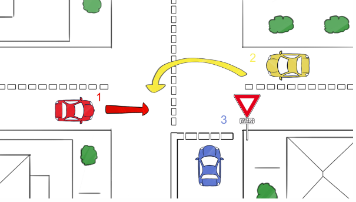
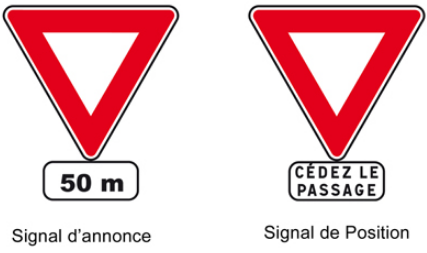
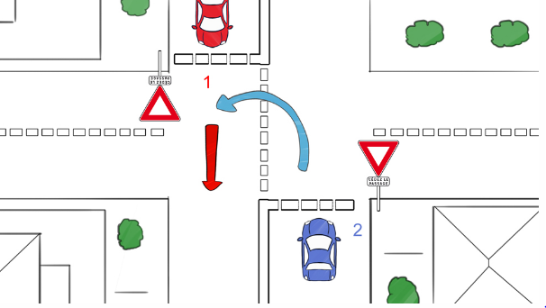
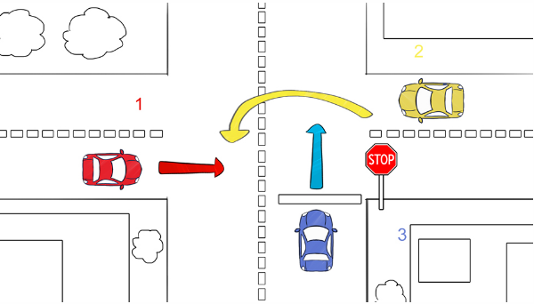
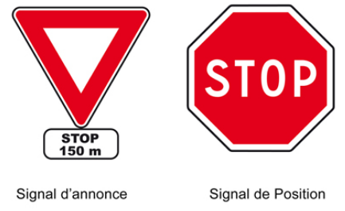

LES INTERSCTIONS (avec panneau-partie1)

Dans la majorité des cas, un panneau donne la règle de la priorité qu'il faut appliquer.
Les pannneau d'intersection:
Le panneau de priorité à droite, il est de forme triangulaire signalant ainsi un danger car
les intersections à priorité à droite sont dangereuses. Ces intersections demandent une
bonne anticipation de la part du conducteur.
Vous devez bien analyser l'environnement avant de prendre la décision de passer ou de vous arrêter.
Dans tous les cas, vous devez ralentir.
Les règles a appliquer sont les meme que celle d'une intersection sans panneau.
Il y a aussi les panneaux de "Cédez le passage" complétés par le marquage au sol d'une ligne blanche
en pointillé.
La ligne marquera toute la largeur de la chaussée si elle est à sens unique, la moitié de la voie en cas de
rue à double sens

Vous devez vous arrêter et donc céder le passage à droite et à gauche si des usagers arrivent ou sont présents sur les voies.
En revanche, vous n'êtes pas obligé de marquer l'arrêt si aucune voiture n'est présente, vous êtes alors autorisé à passer.
 Néanmoins,vous devez toujours ralentir à l'approche d'un Cédez le passage pour être prêt à vous
arrêter à tout moment
Néanmoins,vous devez toujours ralentir à l'approche d'un Cédez le passage pour être prêt à vous
arrêter à tout moment
Les panneaux Cédez le passage peuvent être annoncés plus tôt que l'intersection avec un panonceau indiquant la distance où se trouvera le Cédez le passage.
Si votre véhicule et celui d'en face sont concernés par un Cédez le passage et que vous désirez tourner à gauche, alors c'est de nouveau la priorité à droite qui s'applique car vous avez les mêmes obligations. Vous devez donc laisser passer la voiture d'en face qui va tout droit.
Attention, regardez bien des deux côtés de la chaussée avant de passer l'intersection, car des
véhicules peuvent effectuer des dépassements et donc se trouver sur votre voie à la hauteur de
l'intersection.
Les panneaux Stop imposent l'arrêt complet devant le panneau et la ligne blanche continue marquée au sol même s'il n'y a aucun véhicule. L'arrêt doit être complet et absolu au sens où vos roues ne doivent plus bouger. Vous cédez le passage à gauche et à droite également.
 Dans une rue à double sens, la ligne blanche continue occupe la moitié de la largeur de la chaussée.
Dans une rue à sens unique, la ligne blanche continue occupe toute la largeur de la chaussée
Les panneaux Stop peuvent être annoncés plus tôt que l'intersection avec un panonceau indiquant la distance où se trouvera le Stop.
Arrêtez-vous bien devant la ligne blanche continue et non à hauteur des panneaux. Souvent, les panneaux
sont situés un peu avant la ligne continue donc allez bien jusqu'à la ligne continue marquée au sol pour vous y arrêter.
Si vous tournez à gauche et que le véhicule en face a aussi un Stop, c'est encore une fois la priorité à droite qui
s'applique car vous avez les mêmes obligations. Dans ce cas ci-dessous, vous cédez le passage car vous
tournez à gauche.
Bon courage pour votre code !